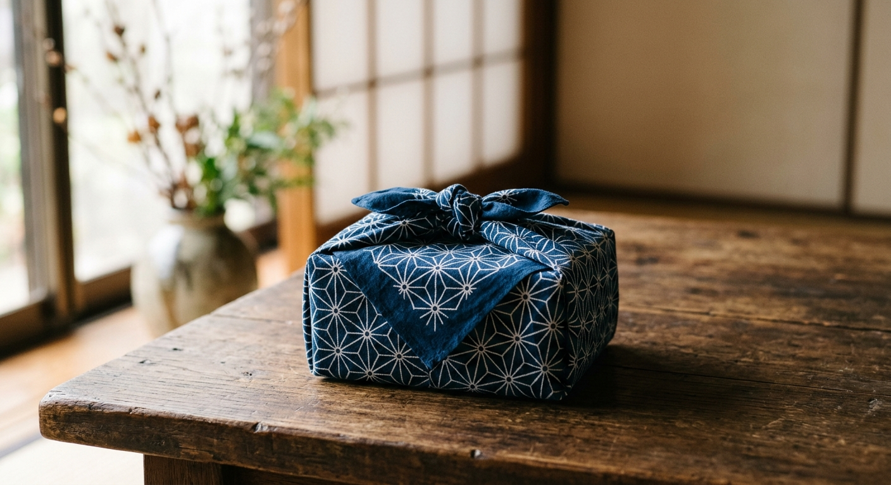

A reversible furoshiki wrapping cloth with the geometric Asanoha (hemp leaf) pattern on one side and cherry blossom on the other - a 1,300-year-old Japanese wrapping tradition in one of its most recognizable designs.

Asanoha symbolizes strength, health, and protection.
Flip it for a completely different occasion-ready design.
One cloth replaces countless sheets of wrapping paper.
Doubles as an eco-bag, bento wrap, or small tablecloth.
Asanoha is an Edo-period geometric motif named for its resemblance to hemp leaves, historically used on baby clothing because hemp grows straight and fast - a wish for healthy, strong growth.
Pairing it with cherry blossom on the reverse side gives the cloth two distinct meanings and looks, letting one furoshiki serve for both an everyday wrap and a more celebratory occasion.
An elegant, reusable alternative to paper.
A sturdy, washable everyday wrap.
One cloth, many everyday uses.
Yes, hand wash or machine wash on a gentle cycle in a laundry net.
Check the current listing - a larger 35.4-inch size is also available.
Basic furoshiki folds are easy to find and learn online.
A reversible Asanoha and Sakura furoshiki wrapping cloth - see current pricing and availability on Amazon.
Check Price on Amazon →